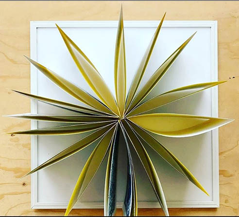

Fern'aParadise蕨類樂園
A girl who lived in a society that people obsessed with ferns.
Because over growing and human’s greedy, people lost their face and didn’t notice they live in a huge cage actually.
In the end, only the girl survived for leaving the cage.
虛構的19 世紀，人類因為沉迷於蒐集蕨類植物，犧牲 一切卻不肯理會孩子的勸告，而導致滅亡的故事。
Because over growing and human’s greedy, people lost their face and didn’t notice they live in a huge cage actually.
In the end, only the girl survived for leaving the cage.
虛構的19 世紀，人類因為沉迷於蒐集蕨類植物，犧牲 一切卻不肯理會孩子的勸告，而導致滅亡的故事。

